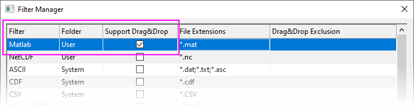

FAQ-1034 Wie verwende ich den Datenkonnektor beim Drop&Drag von Daten in Origin?
Not-Use-Data-Connector-When-Drag-n-Drop
Letztes Update: 12.08.2020
Datenkonnektoren sind Origins neueste Technologie für den Datenimport. Sie bieten einen unkomplizierten Drag&Drop-Import von gängigen Dateitypen. Das heißt, wenn Sie Drag&Drop nutzen, um einen Dateityp zu importieren, der sowohl per Datenkonnektor als auch mit der traditionellen Importmethode (X-Funktionen für den Import) importiert werden kann, werden standardmäßig Konnektoren verwendet.
Um Datenkonnektoren beim Drag&Drop zu deaktivieren:
- Wählen Sie im Menü Einstellungen: Systemvariablen.
- Setzen Sie den Wert der Systemvariable @DCC auf -1, um zu vermeiden, dass der Konnektor für alle Dateitypen verwendet wird.
Bitte lesen Sie auf der Seite zu den Systemvariablen nach, wie Sie @DDC auf einen anderen wert setzen, um spezielle Dateitypen von der Verwendung eines Datenkonnektors auszuschließen.
Darüber hinaus gibt es mehrere Ausnahmen, die Sie beachten sollten:
- Wenn Sie eine Datendatei per Drag&Drop in ein Arbeitsblatt ziehen, in dem die Datenimporteinstellungen gespeichert sind, wird immer die ältere Importmethode verwendet. Dies kann der Fall sein, wenn Sie die Analysevorlage in einer alten Version erstellen wie Origin 2019 und sie dann in einer neueren Version wie Origin 2020b wiederverwenden.
- Wenn eine ordnungsgemäß benutzerdefinierte Origin-Importfilterdatei (*.oif) sich im
(a) gleichen Ordner befindet, in dem auch Ihre Datendatei ist
oder sich
(b) im Ordner Anwenderdateien\Filters befindet,
wird beim Drag&Drop die Datei mit Hilfe der älteren Importmethode in Origin importiert. Dies kann der Fall sein, wenn Sie eine ältere Origin-Importroutine haben, die zufriedenstellend durchgeführt wird, und Sie sich entscheiden, dabei zu bleiben.
 |
- Um einen benutzerdefinierten Importfilter beim Drop&Drag zu verwenden, muss das Kontrollkästchen Drag&Drop unterstützen für den Filter im Dialog Importfilter verwalten (Einstellungen: Importfilter verwalten) aktiviert sein.
- 
- Modifizieren Sie der Wert der Systemvariable @IFS, um zu steuern, wie der relative Systemfilter im Dialog Filter auswählen gezeigt wird. Damit können Sie auswählen, wann Drag&Drop für einen spezifischen Dateityp verwendet wird.
|
- Wenn Sie einen Importcode der älteren Methode in DOFILE.OGS vorliegen haben, eine Datei in Ihrem Programmordner (SYSTEM) oder im Anwenderdateiordner (USER), wird der Code zufriedenstellend ausgeführt. Sie müssen keine neuen Importroutinen schreiben.
| Hinweis: Wir empfehlen die Verwendung der Datenkonnektoren, wenn es möglich ist, da die Konnektortechnologie sich zurzeit weiterentwickelt, während die ältere Importmethode von Origin dies nicht tut. Zum Beispiel werden Text-/CSV-Dateien, die Datum-/Zeitdaten enthalten, automatisch bearbeitet und in einem Arbeitsblatt als Datum/Zeit formatiert.
|
Schlüsselwörter:Import, ASCII, CSV, TXT, DAT, Excel, Konnektor, D&D, Datenfilter